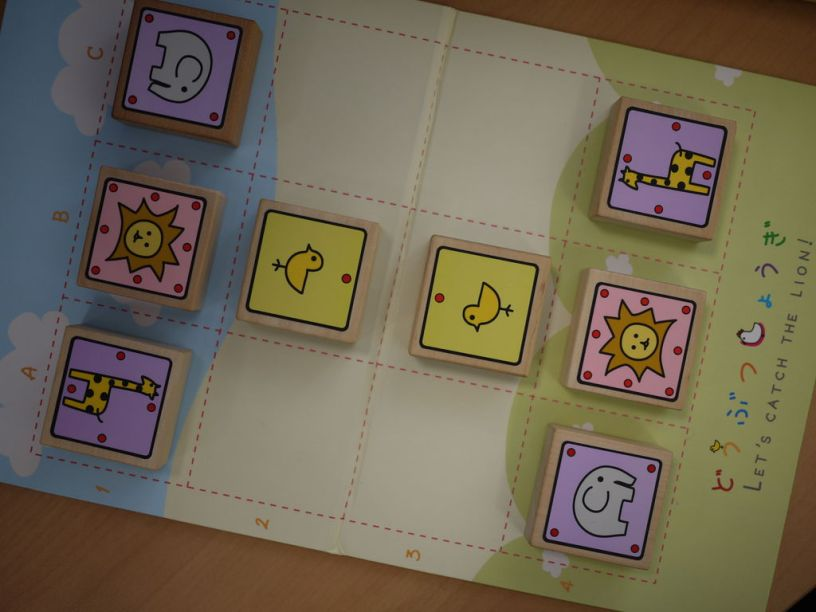

PythonとKerasでどうぶつしょうぎ

はじめに
「どうぶつしょうぎ」 というゲームをご存知でしょうか。（wikipediaの解説）
普及・教育用のミニ将棋として考案されたもので、本将棋が盤9x9、駒8種のところを盤3x4、駒4種までコンパクトにしたものです。
駒の名前もひよこ（歩）、ぞう（弱い角）、きりん（弱い飛車）、ライオン（玉）、にわとり（ひよこの成り駒＝と金）、のように、かわいいです。
駒に描かれているイラストも、大変、かわいいです。

ゲーム空間の規模がそこそこ小さいため、すでに随分前に完全解析もされています。 双方最善を尽くすと78手まで後手勝ち、だそうです。
今回は、AlphaGo
(Zero)
を部分的に真似した深層強化学習で、PythonとKeras（初心者向けの深層学習フレームワーク）を使い、どうぶつしょうぎをプレイするプログラム を作ってみました。
ひとまず先読みは無しで、目の前の局面に対して直感的に手を選び、そこそこ強いもの、を目指します。
今更な話題で研究としての価値はほぼないと思いますが、ただ論文を読むだけよりも実際に手を動かしてみると、色々とわかることもあるものです。 （たぶん。）
つくりかた概要
「プレイするプログラム」と大層なことを書きましたが、核心部分は「与えられた局面に対して次の指し手を返す」、これだけです。
この部分を、深層ニューラルネットワーク「だけ」で作ります。
実はこれ、画像カテゴリ認識と殆ど同じ です。
例えば手書き数字認識と対比すると、数字画像の代わりに局面データ、0-9の代わりに何番目の指し手か、が対応します。
入力として局面を与え、各指し手のスコア（指す確率）を出力する、順伝搬型の深層ネットワークを作ればいいわけです。
ネットワーク構成
入力：盤面と持駒の表現
どうぶつしょうぎの盤面は3x4。各マスを考えるとそれぞれ11通りの状態がありえます。
（駒が成駒含めて5種類、自分と相手の駒があり、空白マスとあわせて5x2+1=11です。）
なので、盤面はサイズ(3,4,11)の3次元整数配列として与えましょう。
各マスで11チャネルのうち1つだけが1、残りは0をとるようにします。
次に持駒ですが、持駒になるのはひよこ、ぞう、きりんの3種のみ。各最大2枚。
こちらは(2,3,2)の3次元配列とします。次元は順に、自分か相手か、駒の種類、持駒の1枚目または2枚目、を表し、値はいずれも0または1です。
入力は合わせて144ノード。ちょっと冗長すぎる気はしますが、ひとまず気にせず進めましょう。
出力：可能な指し手を網羅する
どうぶつしょうぎの指し手は、(1)駒の移動、(2)駒打ち、の2種類があります。
これらは任意の局面に対して、
(1)「動かす駒の位置」「移動後の位置」「成るか、成らないか」
(2)「打つ駒の種類」「打つ位置」
を与えると一意に決められます。
一番強い駒であるライオンでも、盤の端から端まで一手で移動などはできないため、(1)には制限があります。実際に合法でありうる動きは61通り。(2)は単純に、打てる駒3種（ひよこ、ぞう、きりん）と打ち場所3x4で36通り。
合わせて合法手の可能性は97通りです。
ですからネットワークは、97ノードのソフトマックスを出力とすればよい ことになります。
今回使ったネットワーク
入力と出力が決まったので、あとは工夫しだい。 今回は適当に、こんなネットワークでやってみます。
____________________________________________________________________________________________________
Layer (type) Output Shape Param # Connected to
====================================================================================================
input_1 (InputLayer) (None, 3, 4, 11) 0
____________________________________________________________________________________________________
input_2 (InputLayer) (None, 2, 3, 2) 0
____________________________________________________________________________________________________
flatten_1 (Flatten) (None, 132) 0 input_1[0][0]
____________________________________________________________________________________________________
flatten_2 (Flatten) (None, 12) 0 input_2[0][0]
____________________________________________________________________________________________________
concatenate_1 (Concatenate) (None, 144) 0 flatten_1[0][0]
flatten_2[0][0]
____________________________________________________________________________________________________
dense_1 (Dense) (None, 128) 18560 concatenate_1[0][0]
____________________________________________________________________________________________________
dense_2 (Dense) (None, 128) 16512 dense_1[0][0]
____________________________________________________________________________________________________
dense_3 (Dense) (None, 128) 16512 dense_2[0][0]
____________________________________________________________________________________________________
dense_4 (Dense) (None, 128) 16512 dense_3[0][0]
____________________________________________________________________________________________________
dense_5 (Dense) (None, 128) 16512 dense_4[0][0]
____________________________________________________________________________________________________
dense_6 (Dense) (None, 128) 16512 dense_5[0][0]
____________________________________________________________________________________________________
dense_7 (Dense) (None, 97) 12513 dense_6[0][0]
====================================================================================================
Total params: 113,633
Trainable params: 113,633
Non-trainable params: 0
____________________________________________________________________________________________________
input_1とinput_2がそれぞれ盤面と持駒の入力です。中間層6層、活性化関数は途中全てReLU、最後はsoftmax。パラメータ数は11万余り。
盤が小さいので、畳み込みも使わず全て全結合にしています。本将棋に拡張する場合は、畳み込みを使った方がいいでしょう。
強化学習：自己対戦と指し手評価
さて、ようやく本番の学習。基本は、自己対戦の結果による指し手評価です。
そのためには、審判・履歴機能付きのどうぶつしょうぎ盤セット をPythonのクラスとして実装することが必要です。実は全体の中でここが一番面倒なのですが、別に面白くはないので割愛。数時間頑張れば、動くものは作れます。そう、Pythonならね。
自己対戦学習は多少試行錯誤して、いくつか工夫しました。これが良いかはよくわかりませんが。
- 初期配置からいきなり自己対戦するのではなく、勝負がつかない範囲でランダムに数手〜数十手進めた局面から開始。
- 出力中の反則手は無視し、合法手の中で、スコアに比例した確率で指す。
- 自己対戦の終局後、勝者側の指し手全てを教師信号としてネットワークを学習する。
- 敗者側の指し手は無視し、減点しない。また反則スコアが高くても減点しない。
（褒めて伸ばす。初期局面が敗勢だとどうしようもないから、という理由もあり。）
今回は2^17局の自己対戦を行い、終局ごとに学習させました。1局あたりの平均手数は20手、このうち勝者側のみを学習するので、延べ130万局面程度を学習したことになります。
計算は全てノートPC上で行い、計算時間は45分程度でした。
学習結果
ルールの習得
まず、学習したネットワークはどうぶつしょうぎのルール（合法手の規則）をどれくらい学んでいるのか？を検証してみます。
ランダムに指して生成した局面で、ルールの制限を外して自由に指させてみたところ、じつに 合法手が98.7% となりました。1.3%の指し手が反則です。
これら局面での合法手は、平均して局面あたり6.5手程度しかありません。97手からランダムに指せば殆どが反則、合法手は7%にも満たないはず。
ルールについてはかなり良く習得してきていることがわかります。
どれくらい強い？
自分で対戦してみたいところなのですが、インターフェースを作っていないのと客観性のため、学習前のランダムなネットワークと対戦させてみます。揺らぎが1%程度未満になるように、2^14局連続で対戦。先手後手はランダムです。
結果は、、、
勝率 53% !!!!!! (´･ω･`)
んと、、、まず、この数字は十分に有意であるといえます（ｷﾘｯ）。
ランダムに指すのと比べて、確実に強いです。
しかし、、この程度では、まだ人間と勝負できるレベルでないことも明らかでしょう。
原因についてはネットワーク設計に問題がある可能性もありますが、おそらく学習量が全然足りないのだと思われます。
強化学習の成長はゆっくりで、少しづつ高度な好手を順番に見出していく必要があります。
例えばまず最初に、ライオンが取れるときは取るのが好手だ、ということを学ぶ。すると、駒が多いとライオンを取れる機会も増えるので、駒を取るのがいいことを学ぶ。多分まだ、最初の段階の途中くらいと想像できます。
そういうことを考えると、130万局面を評価した段階での勝率53%は、それなりに納得できる数字かもしれません。
今回はノートPC上で1時間足らずの学習なので、また時間ができたらもっと大規模にやってみたいと思います。 自己対戦部分をCythonで高速化して、GPUサーバ上で学習するとか。
ひとまず今回はここまで。おしまい。
追記1
強化学習をさらに2倍、総計218局の自己対戦まで行わせたところ、合法手率86.0%、学習前ネットワークに対する勝率51.7%までそれぞれ暴落。何が起こっているのか、やっぱりよくわかりません。学習方法をもう少し検討するとか、あとはやはりもっと計算資源を投入する必要はありそうですかね。
追記2
強化学習の方法についてですが、碁と将棋の違いとして、特に棋力が低い場合、将棋では終盤（終局間際）の指し手が勝敗に圧倒的に重要、ということがあるかもしれません。
今の場合、最初はライオン取りを学ぶことが必要なのですが、最後にライオンを取るまでにライオン取りを見逃した手なども教師信号になってしまいます。
最初は最終手だけ学ぶなどと人為的に重みをいじった方が、今のレベルでは良い結果が出るかも。王道は、マシンパワーの力尽くなのでしょうが。。
- 前の記事 : Gene Set Enrichment Analysis (GSEA)入門
- 次の記事 : Common Workflow Language入門
- 関連記事 :